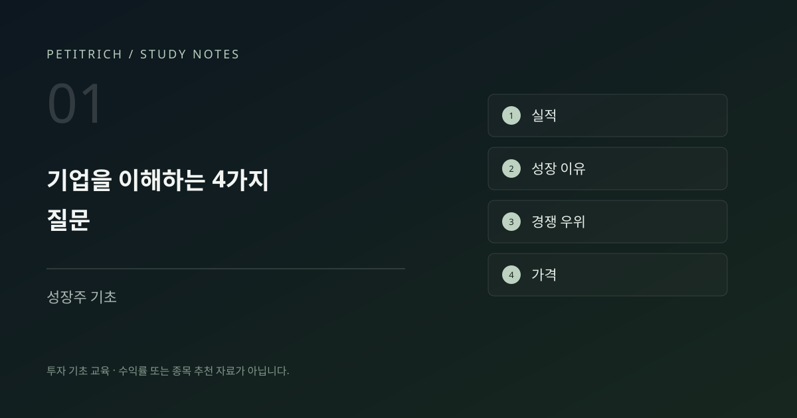
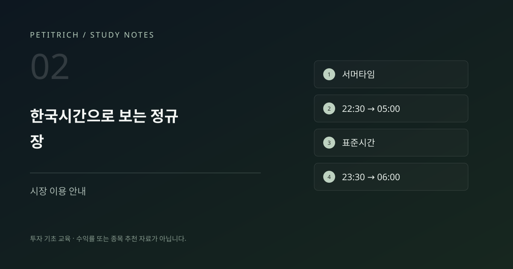
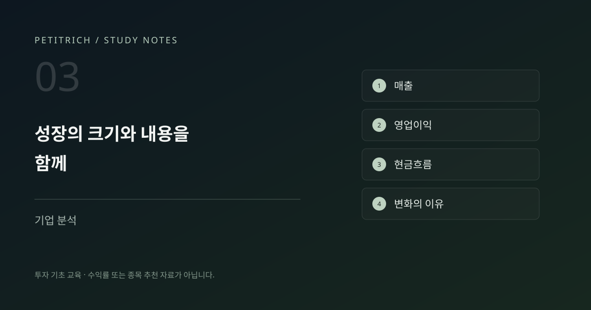

성장주 기초
미국 성장주, 종목 이름보다 먼저 확인할 네 가지
미국 주식 추천을 검색한 다음에는 무엇을 봐야 할까요? 매출과 이익, 성장의 이유, 경쟁 우위, 가격을 나누어 살펴봅니다.
PETITRICH / STUDY NOTES
성장주를 보는 기준부터 거래시간, 기초 용어와 공부 습관까지. 미국 주식 입문자가 차근차근 읽을 다섯 편을 모았습니다.
유료 강의 소개를 포함한 교육 프로젝트 콘텐츠입니다. 이곳의 글은 정보성 학습 자료이며 특정 종목의 매수·매도 추천이 아닙니다.
전체 5개 글

성장주 기초
미국 주식 추천을 검색한 다음에는 무엇을 봐야 할까요? 매출과 이익, 성장의 이유, 경쟁 우위, 가격을 나누어 살펴봅니다.

시장 이용 안내
서머타임이 바뀌면 개장시간도 달라집니다. 2026년 11월 기준 정규장과 장전·장후 거래에서 확인할 항목을 정리했습니다.

기업 분석
매출 성장률, 영업이익률, 영업활동현금흐름을 구분해 봅니다. 유명한 기업이라는 인상에서 실제 사업을 읽는 질문으로 넘어가는 방법입니다.

공부 습관
유튜브와 블로그를 읽은 뒤 남길 질문을 정리했습니다. 원문의 투자 공부 설문에서 출발해, 내 학습 방식을 돌아보는 글로 구성했습니다.

투자 용어
PER 20배와 40배는 무엇이 다를까요? 계산 예시와 비교할 때의 주의점을 살펴봅니다. 원문의 반복 키워드를 별도 글로 확장했습니다.
일치하는 글이 없습니다. 다른 검색어나 주제를 선택해 주세요.
강의에서 배우는 내용과 실제 1강을 먼저 확인할 수 있습니다.